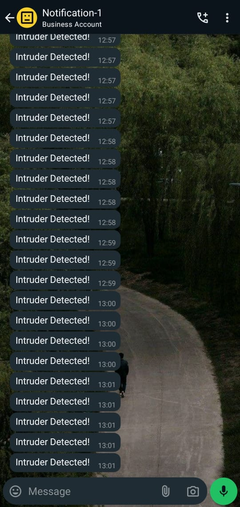
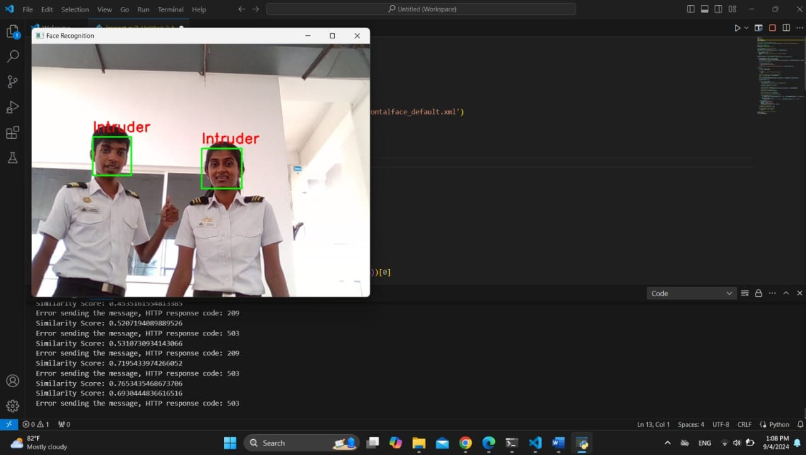

ML-Based Self-Driving
Surveillance Robot Car
An intelligent autonomous robot equipped with real-time facial recognition and intruder detection at 75%+ accuracy. Instant push notifications on detection for unattended perimeter monitoring.



Project Overview
This advanced surveillance robot demonstrates the integration of autonomous navigation, computer vision, facial recognition, and real-time notification systems. The robot car autonomously patrols designated areas while continuously monitoring for intruders using ML-powered detection algorithms and instantly alerts security personnel through mobile notifications.
When an unknown face is detected, the system immediately captures images, logs the event with timestamp and location data, and sends real-time notifications to security personnel via WhatsApp — enabling rapid response to security threats. The Raspberry Pi 4 and Arduino Uno communicate over serial for coordinated control.
Technologies Used
Key Components & Features
Raspberry Pi 4 & Arduino Uno
Pi handles computer vision and notifications; Arduino manages motor control. Communicates via serial interface for coordinated autonomous operation.
HD Camera Module
High-resolution camera for real-time video capture, facial recognition, and intruder detection with 75%+ accuracy in real-world lighting conditions.
Ultrasonic Sensor Array
2× HC-SR04 sensors positioned strategically for obstacle detection and autonomous navigation with intelligent path planning algorithms.
DC Motors with L298N Driver
Precision motor control enabling accurate movement, turning, and differential drive positioning for autonomous patrol routes.
WiFi Communication
Real-time data transmission and instant notification delivery to mobile devices via WhatsApp API with encrypted protocols for security.
Power Management
Efficient battery management with voltage regulation ensuring 2+ hours of extended operational time and reliable performance.
Key Metrics
AI & Computer Vision Implementation
Facial Recognition System
Utilises OpenCV and Haar Cascade classifier for real-time face detection and identification, distinguishing between authorized personnel and potential intruders with over 75% accuracy under varying lighting conditions.
Intruder Detection Algorithm
Each time a snapshot is taken, the captured image is verified against the authorized personnel database. Deep learning-based face detection creates unique facial signatures for comparison with similarity thresholds tuned to balance security and usability.
Real-Time Notifications
Instant alert system sends detailed notifications including timestamps, captured images with confidence scores, and messages via WhatsApp to security personnel's mobile devices with encrypted transmission and multi-recipient support.
Autonomous Navigation
Multi-threaded Python application manages simultaneous processes for navigation, image processing, and communication. A finite state machine architecture combines high-level path planning with reactive obstacle avoidance using sensor fusion.
Project Achievements
- Artificial Intelligence: Implemented Haar Cascade classifier for accurate facial recognition with 75%+ detection accuracy in real-world conditions
- Robotics & Automation: Developed autonomous navigation with intelligent obstacle avoidance and adaptive path planning
- Computer Vision: Real-time image processing with high-accuracy detection in varying lighting conditions
- IoT & Communication: Seamless integration with mobile devices and cloud-based notifications with under 5-second response time
- System Integration: Coordinated multiple subsystems for reliable surveillance with 2+ hours continuous operation
- Security Features: Encrypted communications, tamper detection, secure storage, and comprehensive audit trails